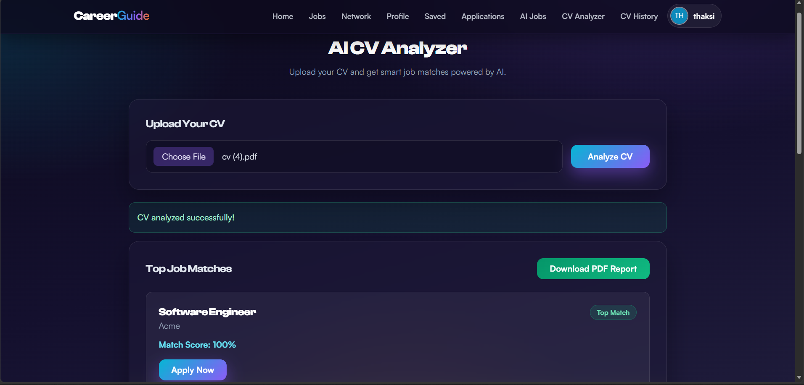
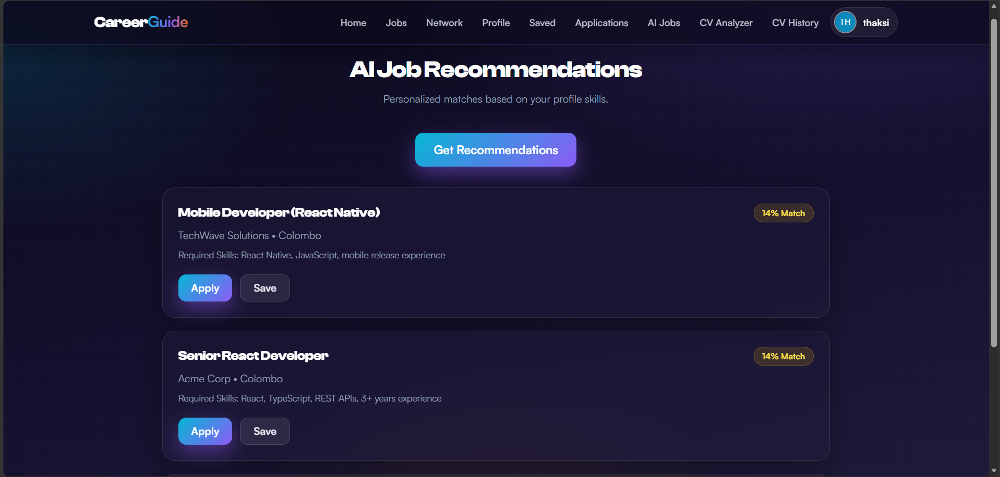
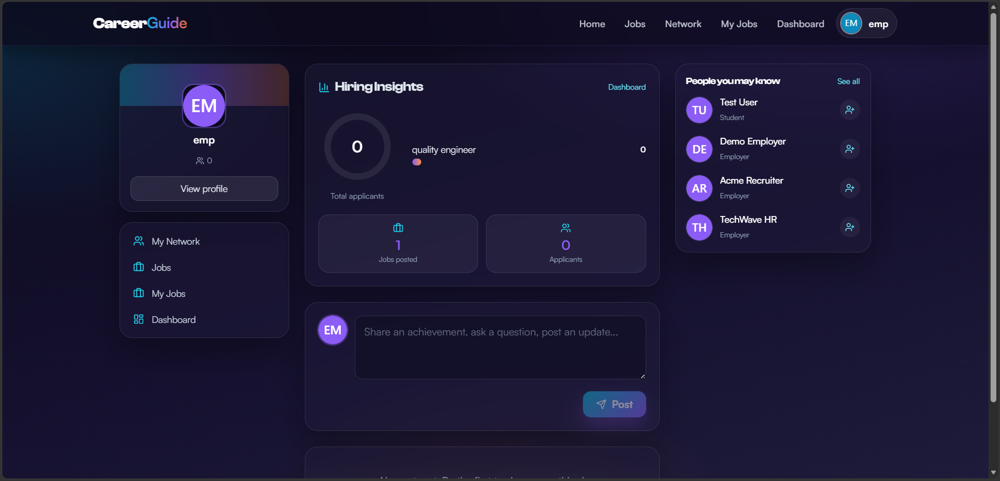

CareerGuide Hub started as a university project but grew into a full-stack career platform. Students build professional profiles and find matching jobs, employers post jobs and review applicants, and admins moderate the platform — blending a job board, an AI-style CV/skill matcher, and a LinkedIn-style network in a modern "Aurora Glow" UI. It's deployed live on Vercel.
The problem
Students often know what they're studying but not which careers align with their strengths — and they lack a single place to match with jobs, network professionally, and get feedback on their CV. I wanted one system that tied profiles, job matching, and networking together for students, employers, and admins alike.
The AI CV Analyzer
The standout feature is the AI CV Analyzer. A student uploads a CV/résumé and instantly gets a skill-based analysis, a match score, and personalized job suggestions — with saved history so they can track progress over time. It's the feature I'm most proud of because it turns a static document into actionable matches.

Tech stack
- Frontend: React 18 + Vite, React Router, Tailwind CSS, and Recharts for the insights graphs
- Backend: Node.js + Express REST API with JWT auth and role-based access
- Database: Supabase (PostgreSQL) for users, jobs, applications, and the social layer
- Security: bcrypt hashing, Helmet headers, rate limiting, input validation, and CORS allow-listing
- Deployment: Vercel for the live demo

Key challenges
The hardest part was bringing a job board, AI-style skill matching, and a full LinkedIn-style social layer (connections, feed, endorsements) into one performant app — with secure, role-based access and three distinct dashboards that still share a single, consistent experience. I solved matching with a scoring algorithm on the backend that ranks jobs by match percentage, then visualized it with a gauge and bar charts on the home feed.

What I learned
- How to structure a React app with authentication, role-based routing, and three dashboard experiences
- Designing REST APIs that cleanly separate auth, profiles, jobs, recommendations, and the social layer
- Modeling a relational schema in Supabase (PostgreSQL) for both job data and networking features
- Hardening an API for production with Helmet, rate limiting, and CORS allow-listing